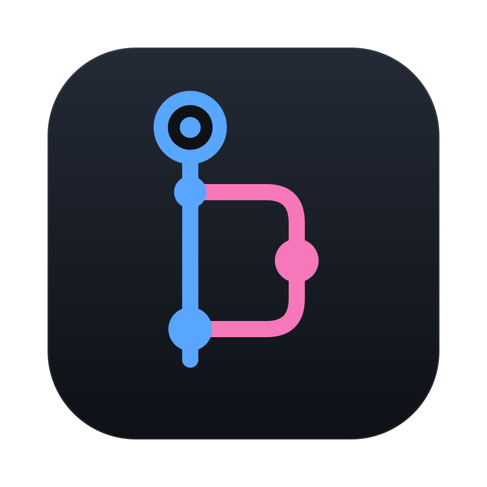
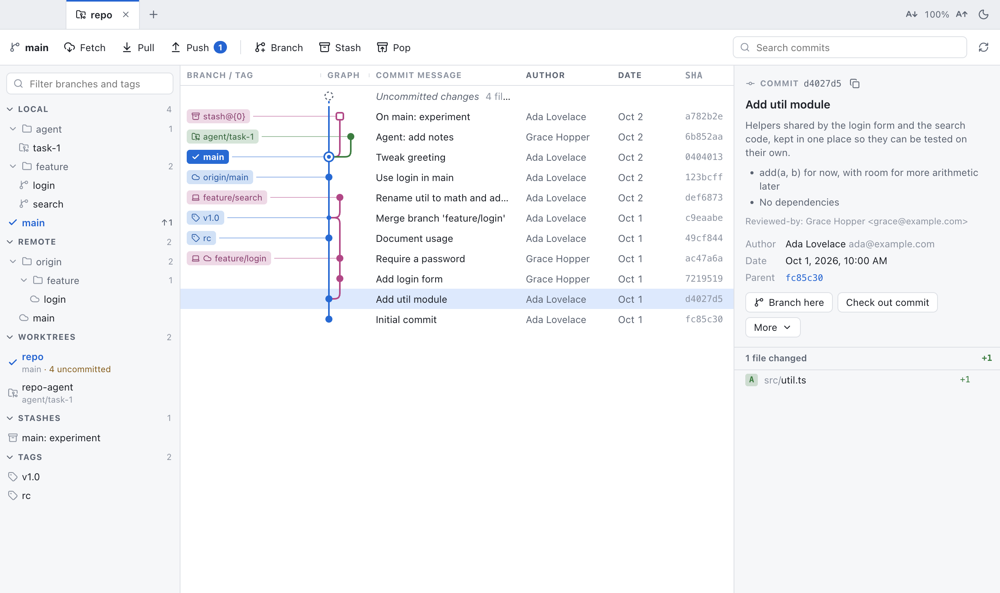
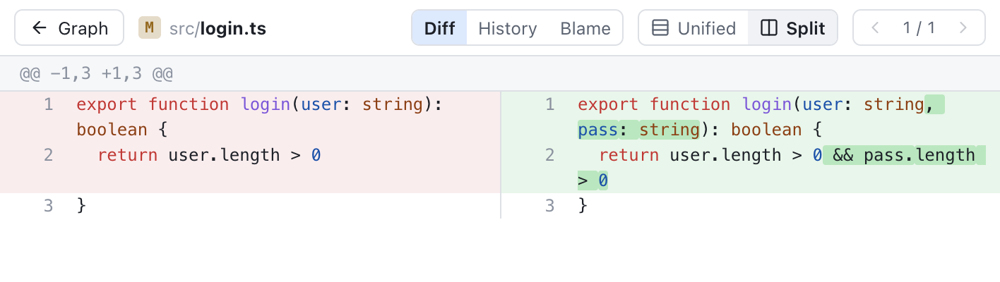
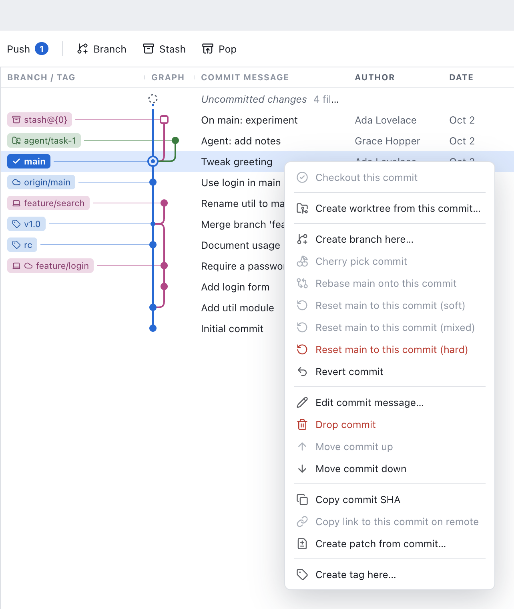

Your git history as a graph you can click through: every branch, diff, and blame line, and every action one click away.
Free and open source · macOS 13 or later, Apple silicon · Intel and Linux

Pick a commit to read its message and every file it touched. Diffs come unified or side by side, with syntax colouring and the changed words marked inside each line.
For any file, follow its history across renames, or open blame to see who last changed each line and in which commit.

Branchline runs the git already on your machine, so it works with the repositories, remotes, and credentials you already have.
Lanes, branch and tag labels, stashes, worktrees, and a row for uncommitted changes, with search across commits.
Stage or unstage whole files, write the message, and commit. Fetch, pull, push, or publish a new branch.
Cherry-pick, revert, rebase, reset, reword, drop, or move a commit. If a cherry-pick, rebase, or edit hits a conflict, everything is put back as it was.
Check out, create, or delete branches, locally or on the remote. Tag a commit, annotated or not, and push the tag.
Create a worktree from any commit and open it in a new tab beside the one you're in.
Keep several repositories open at once. Branchline reopens them where you left off.

Every action has a button or a menu item. Right-click a commit, a branch, or a file to see what you can do with it, or use the More button beside it.
Actions that can't run right now are greyed out, and when git refuses, Branchline says why in plain words.
No account, no subscription, no telemetry. Branchline has no server of its own.
Branchline needs git 2.31 or newer. If git is missing or too old, it says so at the top of the window. Older versions of Branchline are on the releases page.
Signed and notarized by Apple. Open the disk image and drag Branchline to Applications.
An AppImage: make it executable, then run it. Needs GTK 3, which desktop distributions already have.
Not supported yet. An experimental installer is on the releases page for anyone who wants to try it.
Or build it from source with Node.js 24:
git clone https://github.com/chuckconway/branchline.git
cd branchline
npm install
npx install-electron
npm run dev